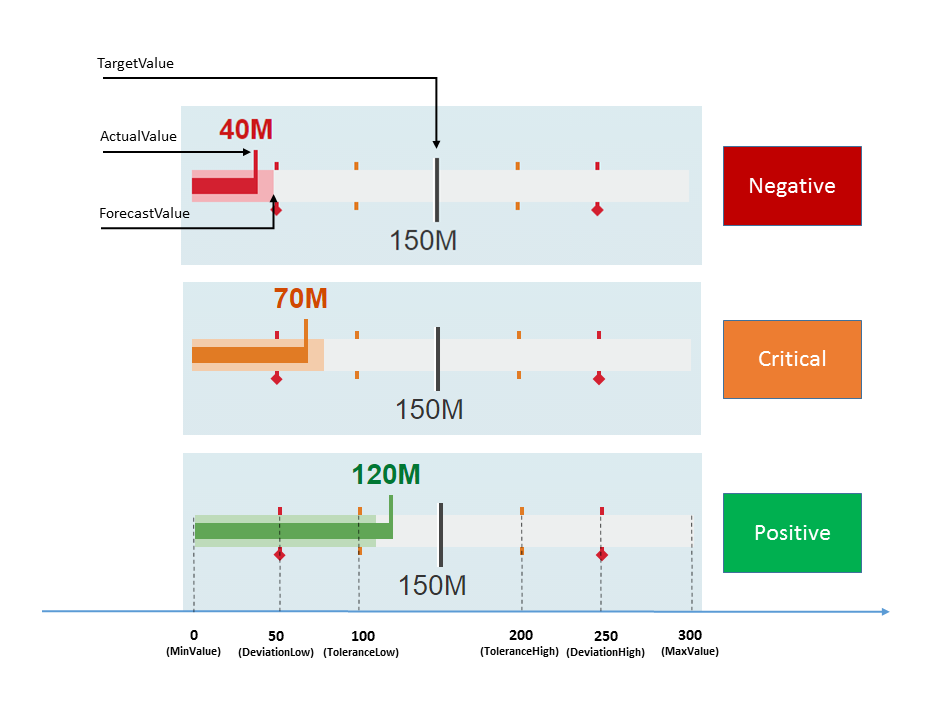
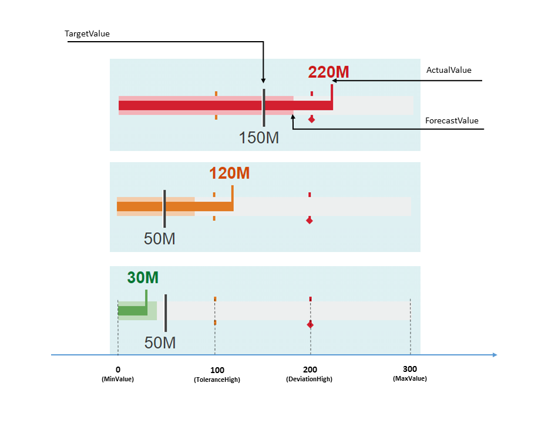

Smart Bullet Micro Chart
The sap.ui.comp.smartmicrochart.SmartBulletMicroChart control creates an sap.suite.ui.microchart.BulletMicroChart control based on OData metadata.
For more information about this control, see the API Reference and the sample in the Demo Kit.
By using the chartType property Bullet of the UI.Chart annotation the corresponding SmartBulletMicroChart control is rendered. The entitySet property of the control must be specified. This attribute is used to fetch metadata and annotation information from the given default OData model. Based on this, the Bullet Micro Chart is created.
Binding
-
If the chartBindingPath is provided, the control will be bound relatively to it. For example, the chartBindingPath can be a navigation property.
-
If chartBindingPath is not provided, the control will be bound absolutely to the entitySet.
For information on how the control provides Title, Description and UnitOfMeasure values retrieved from the annotations, please see the Title, Description and UnitOfMeasures section in the Smart Area Micro Chart documentation.
Color of the Chart bar (Criticality)
The color of the chart bars can be controlled by the Criticality property either directly or by calculation.
-
Criticality can be set directly:
<EntityType Name="ProductType" > … <Property Name="Criticality" Type="Edm.String" /> </EntityType> <Annotation Term="UI.DataPoint" Qualifier="BulletChartDataPoint"> <PropertyValue Path="Criticality" Property="Criticality" /> … </Annotation>
- Criticality can be calculated by the SmartBulletMicroChart control based on
the provided thresholds and the ImprovementDirection property
of the DataPoint annotation.
ImprovementDirection Property
The following values for the ImprovementDirection property are supported:-
Target
Code Example
<EntityType Name="ProductType" > <Key> <PropertyRef Name="Product" /> </Key> <Property Name="Product" Type="Edm.String" Nullable="false"/> <Property Name="Revenue" Type="Edm.Decimal"/> <Property Name="TargetRevenue" Type="Edm.Decimal"/> <Property Name="ForecastRevenue" Type="Edm.Decimal"/> <Property Name="ToleranceRangeLow" Type="Edm.Decimal"/> <Property Name="ToleranceRangeHigh" Type="Edm.Decimal"/> <Property Name="DeviationRangeLow" Type="Edm.Decimal"/> <Property Name="DeviationRangeHigh" Type="Edm.Decimal"/> </EntityType> ..... <Annotations Target="BmcNamespace.ProductType" xmlns="http://docs.oasis-open.org/odata/ns/edm"> <Annotation Term="UI.Chart"> <Record> <PropertyValue EnumMember="UI.ChartType/Bullet" Property="ChartType" /> <PropertyValue Property="Measures"> <Collection> <PropertyPath>Revenue</PropertyPath> </Collection> </PropertyValue> <PropertyValue Property="MeasureAttributes"> <Collection> <Record Type="UI.ChartMeasureAttributeType"> <PropertyValue Property="Measure" PropertyPath="Revenue" /> <PropertyValue Property="Role" EnumMember="UI.ChartMeasureRoleType/Axis1" /> <PropertyValue Property="DataPoint" AnnotationPath="@UI.DataPoint#BulletChartDataPoint" /> </Record> </Collection> </PropertyValue> </Record> </Annotation> <Annotation Term="UI.DataPoint" Qualifier="BulletChartDataPoint"> <Record> <PropertyValue String="Product" Property="Title" /> <PropertyValue Path="Revenue" Property="Value" /> <PropertyValue Path="TargetRevenue" Property="TargetValue" /> <PropertyValue Path="ForecastRevenue" Property="ForecastValue" /> <PropertyValue Decimal="100" Property="MinimumValue" /> <PropertyValue Decimal="300" Property="MaximumValue" /> <PropertyValue Property="CriticalityCalculation"> <Record> <PropertyValue Property="ImprovementDirection" EnumMember="UI.ImprovementDirectionType/Target"/> <PropertyValue Path="ToleranceRangeLow" Property="ToleranceRangeLowValue" /> <PropertyValue Path="ToleranceRangeHigh" Property="ToleranceRangeHighValue" /> <PropertyValue Path="DeviationRangeLow" Property="DeviationRangeLowValue" /> <PropertyValue Path="DeviationRangeHigh" Property="DeviationRangeHighValue" /> </Record> </PropertyValue> </Record> </Annotation> </Annotations> -
Minimize
Related to the code example for target, the code line for the ImprovementDirection minimize would be as follows:Property="ImprovementDirection" EnumMember="UI.ImprovementDirectionType/Minimize"
-
Maximize
 Related to the code example for target, the code line for the ImprovementDirection maximize would be as follows:
Related to the code example for target, the code line for the ImprovementDirection maximize would be as follows:Property="ImprovementDirection" EnumMember="UI.ImprovementDirectionType/Maximize"
-